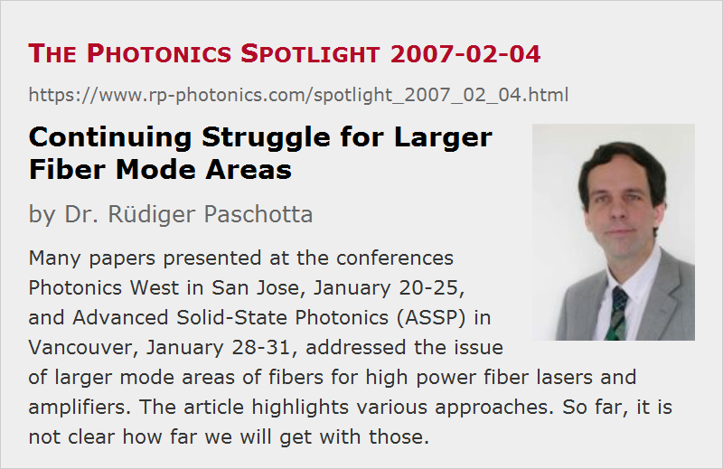

Continuing Struggle for Larger Fiber Mode Areas
Posted on 2007-02-04 as a part of the Photonics Spotlight (available as e-mail newsletter!)
Permanent link: https://www.rp-photonics.com/spotlight_2007_02_04.html
Author: Dr. Rüdiger Paschotta, RP Photonics Consulting GmbH
Abstract: Many papers presented at the conferences Photonics West in San Jose, January 20-25, and Advanced Solid-State Photonics (ASSP) in Vancouver, January 28-31, addressed the issue of larger mode areas of fibers for high power fiber lasers and amplifiers. The article highlights various approaches. So far, it is not clear how far we will get with those.

Ref.: encyclopedia articles on fibers, large mode area fibers, high power fiber lasers and amplifiers; spotlight articles of 2006-12-03, 2006-10-04, 2006-08-10
High power fiber lasers and amplifiers have of course been a very important topic at the conferences Photonics West in San Jose, January 20-25, and Advanced Solid-State Photonics (ASSP) in Vancouver, January 28-31. Quite a number of talks addressed the quest for larger mode areas, as this issue has been recognized as the central bottleneck which has to be overcome in order to continue the recent enormous performance enhancements. (See the previous spotlight articles on this topic as mentioned above.) Quite some creativity has been unleashed in the context of attempts to tackle this problem:
- Sandia National Labs is optimizing refractive index profiles for very large mode areas (talk 6453-48 at Photonics West). Some combined power-law design was found to exhibit better performance than e.g. square-law or triangular profile fibers.
- Fitel reported on distributed mode filtering in a cladding-pumped amplifier (talk 6453-15 at Photonics West). This technique makes it possible to suppress higher-order modes as well as to filter out ASE.
- Researchers at the University of Michigan, collaborating with the company Nufern, have demonstrated a fiber with chirally-coupled core (talk ME2 at ASSP). This contains a second core would around the central core. The idea is basically to obtain phase-matched coupling e.g. of the LP11 mode to the lossy chiral core, hoping to suppress all higher-order modes of the multimode core even at large mode areas.
- IMRA reported an impressive mode area of about 3000 μm2 in an ytterbium-doped leakage channel fiber (talk 6453-42 at Photonics West and ME3 at ASSP). This is a photonic crystal fiber made so that the core supports several modes, but higher-order modes are strongly attenuated by leakage through gaps between the air holes.
- Femlight uses a 60-cm long rod-type photonic crystal fiber which has to be kept straight (talk ME4 at ASSP). The concept is essentially to live with a very weakly guiding core by avoiding any bending. Quite short pulses with up to 50 W average power are generated with high efficiency. However, such a device is actually no more used like a normal fiber; it is more like a long bulk crystal with some built-in weak guiding mechanism.
- The probably most radical approach is based on a concept developed by the famous Anthony E. Siegman: abandon the generally used method of index guiding altogether and replace it with gain guiding! Talk ME1 at ASSP presented the first experimental demonstration of this concept, using a neodymium-doped fiber which is anti-guiding when being unpumped but nevertheless exhibits well-behaved modes due to gain guiding. This was demonstrated with the rather unconventional experimental approach of pumping the fiber with a xenon flashlamp. While the results are certainly encouraging, with an apparently already rather large mode area, the researchers are not yet able to fully assess the potential of their method.
It remains to be seen how far we will get with all these approaches. So far, it is not clear whether we will obtain a practical approach for realizing more areas e.g. of 10,000 μm2 in fibers with reasonable handling properties. Fore sure, many people will continue to work hard in this direction, and obviously a breakthrough can be very rewarding.
This article is a posting of the Photonics Spotlight, authored by Dr. Rüdiger Paschotta. You may link to this page and cite it, because its location is permanent. See also the RP Photonics Encyclopedia.
Note that you can also receive the articles in the form of a newsletter or with an RSS feed.
Questions and Comments from Users
Here you can submit questions and comments. As far as they get accepted by the author, they will appear above this paragraph together with the author’s answer. The author will decide on acceptance based on certain criteria. Essentially, the issue must be of sufficiently broad interest.
Please do not enter personal data here; we would otherwise delete it soon. (See also our privacy declaration.) If you wish to receive personal feedback or consultancy from the author, please contact him e.g. via e-mail.
By submitting the information, you give your consent to the potential publication of your inputs on our website according to our rules. (If you later retract your consent, we will delete those inputs.) As your inputs are first reviewed by the author, they may be published with some delay.
|  |
If you like this page, please share the link with your friends and colleagues, e.g. via social media:
These sharing buttons are implemented in a privacy-friendly way!